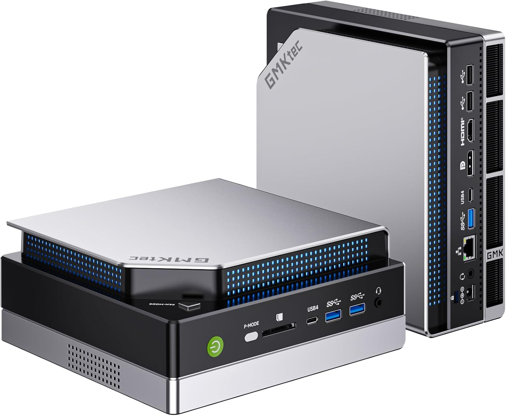

MINI PC FOR 120B models
GMKtec EVO-X2 AI Mini PC AMD Ryzen Al Max+ 395

🚀 GMKtec EVO-X2 AI Mini PC: Deep Dive into Large LLM Performance
This article details the real-world reviews on Amazon and user experience and configuration steps for running exceptionally large LLM models, up to 235 Billion parameters, locally on the GMKtec EVO-X2 AI Mini PC by expert users.
The EVO-X2 is confirmed to be equipped with the powerful AMD Ryzen AI Max+ 395 processor and 128GB of LPDDR5X-8000 onboard memory, offering superior memory bandwidth for integrated GPU (iGPU) acceleration.
💻 EVO-X2 Core Hardware Specifications
The successful performance is rooted in the high-end configuration of the Mini PC:
| Component | Specification | Correction Notes |
|---|---|---|
| Processor (APU) | AMD Ryzen AI Max+ 395 | 16 Cores / 32 Threads (Zen 5 Architecture) |
| Integrated GPU | AMD Radeon 8060S | Not the 780M. |
| System Memory (RAM) | 128GB LPDDR5X-8000 | Soldered, high-bandwidth memory. |
| Max VRAM Allocation | 96GB | Configurable via BIOS. |
🧠 Running Massive LLMs: Qwen3-235B & GPT-OSS-120B
The EVO-X2 demonstrates the capability to load and run two of the largest publicly available GGUF-quantized models:
1. Qwen3-235B-A22B-Instruct
- Model Name:
Qwen3-235B-A22B-Instruct-2507-gguf-q2ks-mixed-AutoRound-inc(235 Billion parameters). - VRAM Allocation: Set to 96GB dedicated graphics memory in BIOS for best results.
- Initial Inference Speed (Windows): ~8.7 to 8.8 tokens/second for the test prompt "Why is the sky blue?"
- LM Studio Runtime:
GGUF: ROCm llama.cpp (Windows) v1.46.0(required for higher layer offloading). - LM Studio Config (v1.46.0 Update):
- Context Length: 30000 (Maximum stable context length is around 27,000 tokens before speed drops significantly).
- GPU Offload: 81 / 94 layers (increased from 80 layers in v1.42).
- Evaluation Batch Size: 128 (Reduced from 512 default to maintain stability).
- Flash Attention: YES (slider to the right).
- Offload KV Cache/Keep Model in Memory/Try mmap: NO (slider to the left).
2. openai/gpt-oss-120b
- Model Name:
openai/gpt-oss-120b(120 Billion parameters, MXFP4 quantization). - VRAM Allocation: 64GB initially, but later set to 96GB for maximum speed.
- Inference Speed (Windows, ROCm v1.46.0): Dramatic increase to 36 to 40 tokens/second.
- Inference Speed (Debian Linux, Vulkan v1.50.2): 47 tokens/second (fastest achieved result).
- LM Studio Runtime (Windows):
GGUF: ROCm llama.cpp (Windows) v1.46.0(required for max speed). - LM Studio Config (v1.46.0 Update):
- Context Length: 63000.
- GPU Offload: 36 / 36 layers (full offload).
- Evaluation Batch Size: 256.
- Offload KV Cache to GPU Memory: YES (slider to the right).
- Flash Attention: YES (slider to the right).
- Try mmap(): NO (Significantly reduces RAM usage after model load, from 57GB to <5GB).
🔧 Critical Configuration Steps
Achieving stable and fast performance requires specific adjustments outside of the default settings:
1. BIOS Configuration
- VRAM Allocation: Repeatedly press Esc upon reboot to enter the BIOS and set the dedicated graphics memory to 96GB.
- Performance Mode: Activate the system's Performance mode.
2. Windows Performance Tuning (CMD Admin)
The "High performance" power plan must be manually unhidden and configured for maximum stability:
- Open Terminal (Admin) (Right-click Windows Menu).
- Enter the command:
powercfg -setactive SCHEME_MIN - In Control Panel / Power Options (High performance plan):
- Set Minimum processor state to 100%.
- Set Turn off hard disk after to Never.
- Set Sleep after to Never.
3. Software Optimization & Clean-Up
- Disable Background Apps: Disable Edge's "Startup boost" and "Continue running background extensions."
- System Services: Use
msconfigto disable unnecessary services like the Print Spooler. - Windows Features: Delete memory-consuming features like OneDrive and the Recall feature.
- Driver Warning: Before upgrading the AMD Adrenalin driver software (e.g., to 25.8.1), set a System Restore Point, as new driver versions may degrade ROCm inference speed (e.g., from 40 tokens/s down to 33 tokens/s with Vulkan).
4. Linux Performance (Debian Trixie)
- OS: Debian Linux with Gnome graphical interface.
- Performance Mode: Activate the Gnome High Performance mode.
- LM Studio Settings:
- Hardware / Memory Limit: Set to 110.
- Runtime: Use
GGUF: Vulkan llama.cpp (Linux) v1.50.2(ROCm was unstable/unsupported in this configuration).
- Result: Achieved 47 tokens/second for the gpt-oss-120b model, making Linux the fastest environment tested.
💡 Troubleshooting and Best Practices
- Gibberish/Crashes: If the model outputs gibberish (e.g., "GGGGG...") or crashes, the likely cause is the Evaluation Batch Size being too high. Divide the Evaluation Batch Size by 2 until the model is stable.
- Context Length Limit: While the system can support very long context lengths (up to 262144), the practical limit for Qwen3 235B is around 27,000 tokens before the speed plummets to 1 token/second.
- Model Runtime Switching: Different models and versions of LM Studio require different runtimes (e.g., Qwen3 235B favored ROCm, while gpt-oss-120b sometimes required Vulkan depending on the
llama.cppversion). Users must select the working runtime for each model.
This is an excellent comparison between two of the most powerful current-generation mini PCs, both leveraging AMD's "Zen 5" architecture for CPU and XDNA 2 for AI.
Based on the detailed specifications and focusing on LLM (Large Language Model) performance—which primarily depends on the GPU (iGPU) and high-bandwidth memory (VRAM capacity and speed)—the GMKtec EVO-X2 is clearly the more optimized and powerful machine.
Here is a side-by-side breakdown of the key differentiators for AI/LLM workloads:
🔬 Head-to-Head Specification Comparison
| Feature | GMKtec EVO-X2 (Ryzen AI Max+ 395 / Strix Halo) | GEEKOM A9 Max (Ryzen AI 9 HX 370 / Strix Point) | Optimization Winner |
|---|---|---|---|
| CPU Cores | 16 Zen 5 Cores / 32 Threads | 12 Cores (4 Zen 5 + 8 Zen 5c) / 24 Threads | EVO-X2 (More full cores, higher multi-threaded capacity) |
| L3 Cache | 64 MB | 24 MB | EVO-X2 (Crucial for high-performance computing) |
| iGPU | Radeon 8060S (RDNA 3.5) | Radeon 890M (RDNA 3.5) | EVO-X2 |
| iGPU Compute Units (CUs) | 40 CUs | 16 CUs | EVO-X2 (Significantly more GPU power for inference) |
| iGPU Performance Claim | Positioned between RTX 4060 and 4070 Laptop GPU | Designed for 1080p high settings gaming | EVO-X2 |
| System Memory | 128GB LPDDR5X 8000MHz (Eight Channel) | Up to 128GB DDR5-5600 (Dual Channel SO-DIMM, typically slower) | EVO-X2 |
| Memory Channels | Eight Channel | Dual Channel | EVO-X2 (Crucial for iGPU bandwidth/speed) |
| Max VRAM for LLMs | Up to 96GB (Out of 128GB) | Maximum is typically around 32GB (for a 64GB system) or 64GB (for a 128GB system), and the memory is slower. | EVO-X2 (Supports larger models like Deepseek 70B/Qwen3 235B) |
| Dedicated NPU TOPS | 50+ TOPS (Up to 126 TOPS total) | 50 TOPS (Up to 80 TOPS total) | EVO-X2 (Higher total AI potential) |
| Cooling | Triple Cooling Fans (Dual CPU + DDR5/SSD fan) + 3 Heatpipes (35dB Quiet Mode) | Advanced IceBlast 2.0 (Vapor Chambers, Graphene) + Ultra-Quiet Fan (40dB) | Tie/Subjective (EVO-X2 is quieter at 35dB in quiet mode; A9 Max uses high-end cooling tech like vapor chambers) |
| Expandability | Dual M.2 2280 PCIe 4.0 slots (Max 8TB) | 1x M.2 2280 + 1x M.2 2230 | EVO-X2 (Easier full-size M.2 expansion) |
🥇 Conclusion: Optimized and More Powerful
The GMKtec EVO-X2 is unequivocally the more powerful and optimized machine for running large LLMs and demanding AI workloads.
Why the EVO-X2 is Superior for LLMs:
-
Massive VRAM Capacity and Bandwidth (The Decisive Factor):
- The EVO-X2's use of the high-end "Strix Halo" APU allows for a monumental 40 CUs and, most importantly, up to 96GB VRAM allocation from the 128GB Eight-Channel LPDDR5X-8000 system memory.
- This combination of high CU count, massive VRAM pool, and eight-channel memory bandwidth is the "secret sauce" that allows the EVO-X2 to comfortably load and run colossal models like Qwen3 235B and Deepseek 70B at usable speeds, as demonstrated in your initial data. The memory bandwidth from eight channels is significantly higher than the A9 Max's dual-channel setup.
-
Raw GPU Compute:
- The EVO-X2's Radeon 8060S (40 CUs) is 2.5 times larger than the A9 Max's Radeon 890M (16 CUs). GPU Compute Units are the primary resource for LLM inference speed (tokens/second), making the EVO-X2 drastically faster for models that fit in VRAM.
-
Overall AI Performance (TOPS):
- The EVO-X2 boasts an overall AI performance rating of up to 126 TOPS, significantly higher than the A9 Max's 80 TOPS total.
While the GEEKOM A9 Max is a top-tier mini PC from the "Strix Point" family, its memory is typically standard dual-channel SODIMM (even if you upgrade to 128GB) and its iGPU is much smaller. For the specific use case of running very large, modern local LLMs, the GMKtec EVO-X2's "Strix Halo" architecture, with its Quad-Channel/Eight-Channel LPDDR5X and 40CU iGPU, is a class above.
The GMKtec EVO-X2 can fine-tune LLMs, but it is better suited for inference and multi-node clustering for extreme loads than for deep training.**
Here is a breakdown of its capabilities regarding tuning and training:
🛠️ Fine-Tuning (LoRA/QLoRA)
The GMKtec EVO-X2 is highly capable of running fine-tuning tasks, especially using modern parameter-efficient techniques like LoRA (Low-Rank Adaptation) or QLoRA (Quantized LoRA).
- Key Advantage: 96GB Unified VRAM: The ability to allocate up to 96GB of high-speed LPDDR5X-8000 memory as VRAM is the primary factor.
- Fine-tuning requires loading the base model weights, the optimizer states, and the LoRA adapters into memory simultaneously. 96GB allows you to fine-tune very large models (e.g., 70B parameters) using QLoRA, where a standard dedicated GPU with 24GB or less VRAM would fail.
- Software: While tools like LM Studio are currently optimized for inference, popular fine-tuning frameworks like Hugging Face's PEFT (Parameter-Efficient Fine-Tuning) and Unsloth are compatible with AMD's ROCm ecosystem, which allows them to leverage the EVO-X2's powerful integrated GPU.
- Trade-off: While the EVO-X2 can handle the size of the model, the training speed (measured in steps per second) will be significantly slower compared to high-end dedicated GPUs (like an NVIDIA RTX 4090) due to the iGPU's overall lower computational raw power and memory bandwidth compared to a dedicated card's GDDR6X memory.
⚙️ Full Training (From Scratch)
Full training of foundational LLMs from scratch is generally not practical on the EVO-X2.
- Resource Requirements: Training a new foundation model (e.g., a new 7B or 13B LLM) requires massive datasets, hundreds or thousands of gigabytes of VRAM, and weeks or months of computational time, typically done on large clusters of data center GPUs (like NVIDIA H100s or AMD Instincts).
- Conclusion: The EVO-X2 is designed for client-side AI inferencing and model deployment, not foundational research training.
🔗 The EVO-X2's Unique Scaling Solution: Multi-Node Clustering
GMKtec has explicitly addressed the desire for more power by offering a unique solution that leverages the high-speed USB4 (40Gbps) ports for massive inference:
- AI Server Cluster: The EVO-X2 (128GB version) is designed to support multi-node clustering (combining multiple Mini PCs).
- Configuration: You can link a Primary Machine with one or two Secondary Machines using the USB4 Type-C interfaces.
- Result: This allows the collective memory pools and compute resources to be used for a single task. This was successfully tested to run the Qwen3 235B (Q4KM quantization) model, which required a total memory capacity of 137GB, demonstrating that the EVO-X2 can be scaled for extremely large LLM deployment.
Summary for Tuning and Training
| Task | Capability on EVO-X2 | Recommended Alternative Hardware |
|---|---|---|
| Inference (Running LLMs) | Excellent. Up to 235B parameters (with clustering). | None better in the Mini PC form factor. |
| Fine-Tuning (LoRA/QLoRA) | Good. Capable of fine-tuning large models (70B+) using QLoRA due to large VRAM pool, but slower than high-end desktop GPUs. | Dedicated RTX 4080/4090 or AMD Instinct for much faster iterations. |
| Full Training (From Scratch) | Impractical. Not designed for this workload. | Cloud services (AWS, Azure) or specialized data center hardware. |
In short, you can definitely use the EVO-X2 for personal LLM fine-tuning projects due to its massive memory, but its true strength lies in its ability to run large models that others simply cannot due to VRAM limitations.